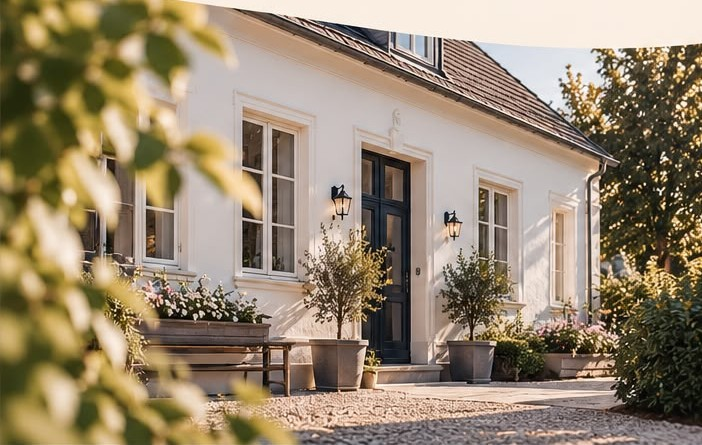

MUHR IMMOBILIEN · HERZLICH WILLKOMMENMehr als
Mehr als
Immobilien.
Zuhause weiterdenken.
Immobilien sind mehr als Objekte. Sie sind Lebensräume. Mit Erfahrung und einem klaren Blick fürs Wesentliche begleite ich Sie von der ersten Idee bis zur Umsetzung.
Leistungen entdeckenMUHR IMMOBILIEN · PLANEN · KOORDINIEREN · UMSETZEN01